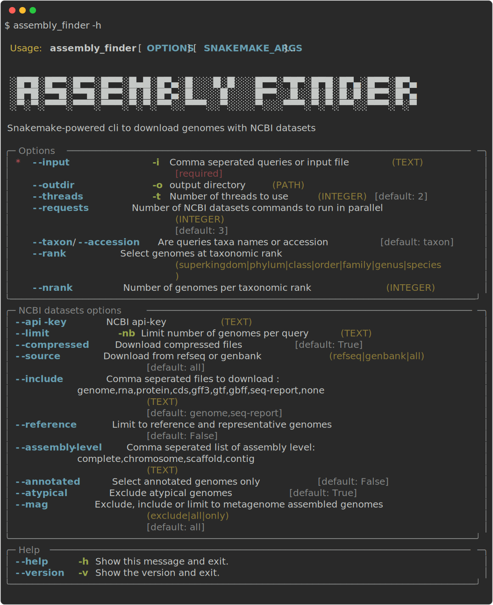

assembly_finder


assembly_finder is a Snakemake CLI wrapper for NCBI datasets, written with Snaketool, for easy genome assembly downloads.
Installation
Usage
Taxon
- Download staphylococcus aureus reference genome
or
Taxa
- Find reference genomes for multiple taxa
or
with taxa.txt:
Accessions
- Download staphylococcus aureus reference genome using its assembly accession
- Download multiple accessions
accessions.txt:
Command-line options
